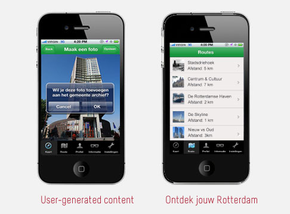
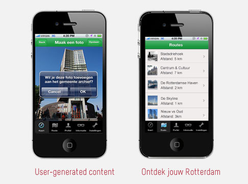

Flashback010
Concepting, Research, Vormgeving
Flashback010 is een mobiele app, ontstaan in samenwerking met het Gemeente archief van Rotterdam. Het Gemeente archief heeft om dit moment veel beeldmateriaal tot haar beschikking. Maar waar tot nu toe niks mee gedaan werd. Voor deze schoolopdracht heb ik samen met mijn team een applicatie ontwikkeld die het mogelijk maak de gebruiker interactief bezig te laten zijn met de geschiedenis van Rotterdam. En inzicht te geven in hoe Rotterdam is veranderd door de jaren heen.
Door middel van GPS weet de app waar de gebruiker zich op dat moment bevindt, waarna hij de foto's uit het Gemeente archief ophaalt die gemaakt zijn op die locatie. Op deze manier ziet de gebruiker hoe de stad Rotterdam zich in al die tijd heeft ontwikkeld.
Ik heb tijdens dit project veel geleerd over het ontwerpen voor mobiel, wat toch een heel andere discipline is dan een website ontwerpen. Daarnaast was het interessant dat dit project in samenwerking was met een echte opdrachtgever, met ook zijn eigen voorkeuren en eisen. Ik heb hierdoor veel geleerd over het achterhalen van wensen en communiceren met de klant.
 
